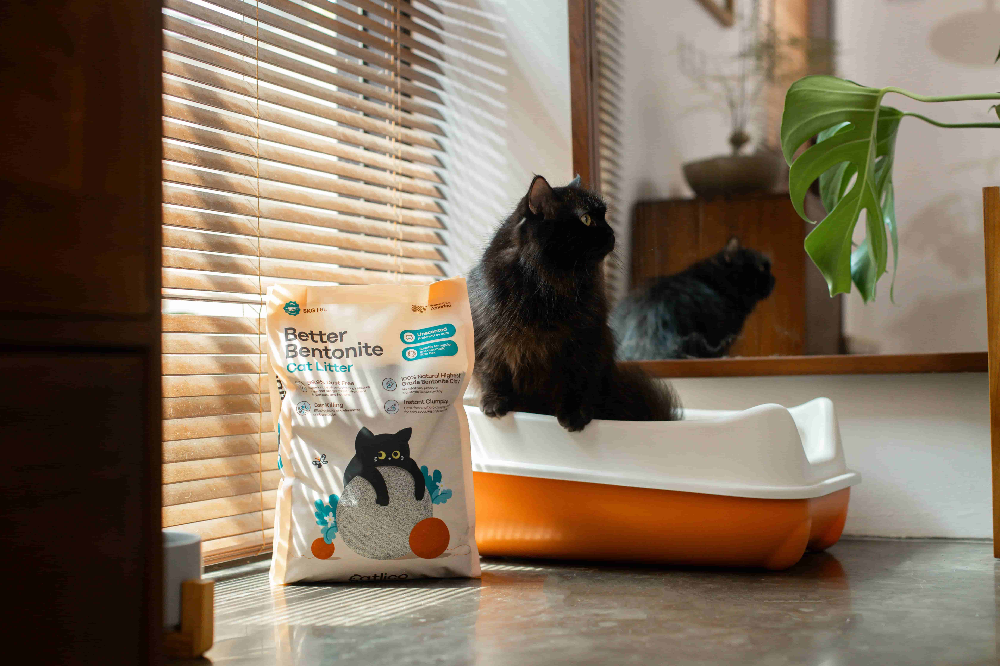

Better Bentonite Cat Litter
Alami. Tanpa Pewangi. Pilihan Kucing & Cat Parents.
- Penghilang Bau
- Gumpal Instan
- 100% Tanah Liat Bentonit Alami Grade Tertinggi
- 99,9% Bebas Debu
Mengapa Cat Parents Memilih Catlico
Kontrol Bau hingga 30 Hari
Better Bentonite Cat Litter menetralisir bau dari sumbernya — bukan menutupinya dengan pewangi. Tanah liat bentonit alami mengikat dan mengunci molekul bau saat pertama kali bersentuhan, menjaga rumahmu tetap segar hingga 30 hari dengan penyekokan rutin setiap hari.
Menggumpal Seketika
Formula gumpal ultra-cepat kami membentuk gumpalan yang keras dan padat begitu bersentuhan dengan kelembapan. Tidak ada yang rembes ke dasar — hanya penyekokan yang bersih dan mudah setiap saat. Lebih sedikit berantakan, lebih sedikit terbuang.
100% Tanah Liat Bentonit Alami
Terbuat dari 100% tanah liat sodium bentonit alami grade tertinggi yang bersumber dari USA — tanpa bahan kimia, tanpa pewangi, dan tanpa bahan tambahan sintetis apapun. Murni. Aman. Lembut di cakar kucingmu dan sistem pernapasannya.
Formula 99,9% Bebas Debu
Formula rendah debu kami meminimalkan partikel di udara — melindungi sistem pernapasan sensitif kucingmu dan menjaga rumahmu dari debu yang menempel di furnitur. Aman untuk kucing dan cat parents yang memiliki alergi atau sensitivitas.
Mengapa Bebas Pewangi?
Kucing memiliki hingga 200 juta reseptor bau — sekitar 40 kali lebih banyak dari manusia. Apa yang terasa lembut bagi kita bisa sangat menyengat dan membuat stres bagi kucing. Pewangi buatan dalam pasir kucing adalah salah satu penyebab umum kucing menghindari litter box — tapi sering tidak disadari.
Ketika kucing berjalan melewati pasir beraroma, bahan kimia pewangi menempel di cakarnya dan masuk ke tubuhnya saat ia merawat diri. Kucing adalah karnivora obligat dengan kemampuan terbatas untuk memetabolisme senyawa sintetis tertentu — artinya beberapa bahan tambahan pewangi yang tidak berbahaya bagi kita dapat terakumulasi dalam sistem tubuh mereka seiring waktu.
Better Bentonite Cat Litter sama sekali tidak mengandung pewangi, parfum, atau agen penyamar bau. Kontrol bau sepenuhnya berasal dari sifat penyerapan alami tanah liat bentonit grade tinggi — cara yang paling alami dan aman.
Kucingmu akan merasakan perbedaannya. Dan kamu juga — karena kucing yang merasa nyaman di litter box-nya adalah kucing yang akan selalu menggunakannya.

Cocok untuk Litter Box Otomatis Kamu
Formula gumpal instan Better Bentonite Cat Litter dirancang khusus dengan mempertimbangkan litter box otomatis. Gumpalan yang keras dan cepat tidak hancur dalam mekanisme penggaruk — menjaga litter box otomatis kamu bekerja dengan lancar.
- Litter Robot ✓
- PETKIT ✓
- PetSafe ScoopFree ✓
- Whisker ✓
Tidak melihat merek kamu? Formula gumpal bentonit kami bekerja dengan semua litter box otomatis yang kompatibel dengan pasir gumpal.
Cara Penggunaan
-
Isi litter box hingga kedalaman 7–10 cm
Tuangkan Better Bentonite Cat Litter ke dalam litter box yang bersih hingga kedalaman 7 hingga 10 sentimeter. Lapisan yang lebih dalam memberi ruang kucingmu untuk menggali dan meningkatkan pembentukan gumpalan.
-
Sekop gumpalan setiap hari
Gunakan sekop berlubang untuk membuang gumpalan padat setiap hari. Penyekokan harian adalah hal paling efektif yang bisa kamu lakukan untuk menjaga kesegaran dan memperpanjang umur pasir.
-
Tambah pasir sesuai kebutuhan
Setelah menyekop, tambahkan sedikit pasir baru untuk mempertahankan kedalaman ideal 7–10 cm. Ini menjaga litter box tetap nyaman dan efektif di antara penggantian penuh.
-
Ganti penuh setiap 1–2 minggu
Kosongkan litter box sepenuhnya, cuci dan keringkan, lalu isi kembali dengan pasir baru. Tergantung berapa banyak kucingmu, penggantian penuh setiap 1 hingga 2 minggu menjaga semuanya tetap segar secara konsisten.
Bahan-Bahan di Dalamnya
| Bahan | Fungsinya |
|---|---|
| 100% Tanah Liat Sodium Bentonit (bersumber dari USA) | Agen penggumpalan dan penetralisir bau utama. Alami, tidak beracun, dan sangat menyerap. |
| Tanpa pewangi | Lebih aman untuk kucing dengan sistem pernapasan sensitif. Kontrol bau berasal dari tanah liat itu sendiri, bukan dari agen penyamar. |
| Tanpa bahan kimia atau aditif | Lembut di cakar dan aman untuk kucing yang merawat diri setelah menggunakan litter box. |
| Tanpa pewarna atau bahan warna | Tampilan alami — tanpa bahan tambahan yang tidak perlu yang bisa menyebabkan iritasi. |
Pertanyaan Umum
Apakah Better Bentonite Cat Litter bebas pewangi?
Ya. Better Bentonite Cat Litter sama sekali tidak mengandung pewangi, parfum, atau aroma buatan apapun. Sepenuhnya tanpa pewangi — aman untuk kucing dengan hidung dan sistem pernapasan yang sensitif. Kontrol bau dicapai secara alami melalui sifat penyerapan tanah liat bentonit grade tinggi.
Apakah cocok untuk litter box otomatis?
Ya. Better Bentonite Cat Litter sepenuhnya kompatibel dengan litter box otomatis dan self-cleaning, termasuk Litter Robot, PETKIT, PetSafe ScoopFree, dan model Whisker. Gumpalan yang keras dan cepat tidak hancur dalam mekanisme penggaruk, menjaga litter box otomatis kamu bekerja dengan lancar.
Apakah aman untuk anak kucing?
Ya. Terbuat dari 100% tanah liat bentonit alami tanpa bahan kimia, pewangi, atau pewarna, Better Bentonite Cat Litter aman untuk kucing semua usia termasuk anak kucing. Seperti semua pasir gumpal, kami menyarankan untuk mengawasi anak kucing yang sangat muda (di bawah 4 minggu) hingga mereka belajar untuk tidak memakan pasir.
Berapa lama kontrol bau bertahan?
Better Bentonite Cat Litter memberikan kontrol bau hingga 30 hari dengan penyekokan harian yang teratur. Tanah liat bentonit alami mengikat dan mengunci molekul bau saat pertama kali bersentuhan — menjaga rumahmu tetap segar tanpa agen penyamar buatan.
Apakah tersedia di Indonesia?
Ya. Better Bentonite Cat Litter tersedia di Indonesia di Shopee dan Tokopedia. Kunjungi halaman toko kami untuk ketersediaan terkini, harga, dan opsi pengiriman ke kotamu.
Dari mana bahan bakunya berasal?
Tanah liat bentonit yang digunakan dalam Better Bentonite Cat Litter bersumber dari USA — salah satu sumber sodium bentonit berkualitas tinggi terbaik di dunia. Kami menggunakan grade tertinggi yang tersedia untuk memastikan performa penggumpalan optimal dan kemurnian bahan.
Apakah bisa di-flush ke toilet?
Tidak. Kami tidak menyarankan untuk mem-flush pasir bentonit gumpal jenis apapun ke dalam toilet, karena dapat mengembang dan menyumbat sistem perpipaan. Buang pasir bekas pakai ke dalam sampah rumah tangga biasa (disarankan menggunakan kantong tertutup).